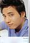
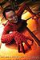
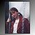
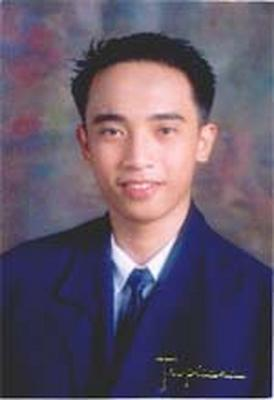
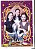
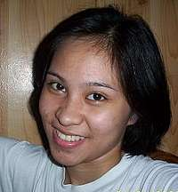

- Won Bin, 07/09/2004:

Annyeonghaseyo Ronvin, thanks for your testimonial. You are one TRUE Won Bin fan. Please continue supporting Won Bin as you'd always do. Lets wait together and see him achieve his goal...WONBIN JJANG!!^o^
- TVXQ.Max, 07/04/2004:

~ Thanks for adding TVXQ_Max ~ ~ TVXQ Rocks!!! ~ @@@@@tvxq_max@yahoo.com.sg@@@@@
- Mark, 06/19/2004:

etong taong to ay hindi mahiyain kung pag-uusapan ay hobbies. sa totoo pa nga niyan ay nagdala siya ng iba't ibang action figures ni mask rider black!!!!! iba-iba kada araw. eh ano nga naman kung college na siya. eh un ang hobby ng tao eh! wala silang pake. siguro inggit lang sila dito kasi kumpleto niya silang lahat. ayos b? hehhehehehehhe
- Athena Rose, 06/02/2004:
what can i say to my favorite brother? mmm..he's a shy and deep type of person..he's the most lovable person that i've ever known.makulit to..lalo na pagbumanat sa mga joke ko..imbes na matawa ung tao sa joke ko ay mas natatawa pa sa kanya.thats y we have a vibe..close na close kami nyan..and i love him a lot..we could talk about anything this world has to offer.minsan pagnagkuwento kami nyan umaabot ng ilang oras..basta masarap syang kasama.he's cool..independent, responsible, good natured, meek, kind and nice..As ur sister eto lang ang advice ko sayo, basta dont ever change, i want u the way u are.no more no less..ang problema lang di sya mahilig sa sports pero ok lang yun eh playstation naman ang sports nya eh.. hehe..basta all i have to say is he is my good brother and my best friend..basta sa mga girls dyan na nacucute-tan sa kanya, eto lang ang masasabi ko..cute talaga yan, guwapo pa! if u r his friend, walang iwanan!
- j H a C k I e, 06/01/2004:
__________00_______________00__________ _________0000_____________0000_________ _________0000_____________0000_________ _________0000_____________0000_________ __________00_______________00__________ _______________________________________ ___0______________________________0____ ____0____________________________0_____ _____000______________________000______ ______00_000______________000_00_______ _______00___00000000000000___00________ ________00_____00000000_____00_________ ___________00_0000000000_00____________ ______________0000000000_______________ _______________00000000________________ _______________________________________
- PCHSannexOthree, 05/13/2004:
PCHS*aNnEx*BaTcH*2003*RuleZzZ
- Hanna, 05/10/2004:

bakit u binura ung testi mo sa akin ha???!!! humanda ka sa akin sa pasukan, kala mo dyan ha!!!!!!wahehehe.. yang c ronald napakabungisngis na tao yan.. lalo na pag tumatawa yan, grabe nakakahawa!!! super galing nyan sa math, as in talagang pwede ng isama sa "elite circle of wizards" ... o diba para ka pang c harry potter ..,,. pero mas matalino at mas cute sya sau noh!... heheheh.... close kami nyan kc nagkakasundo kami sa mga bagay2 ... mabuting kaibigan kc tinutulungan nya me sa lahat ng bagay as far as he can ..,,.may pagka weird nga lang kc minsan di mo alam kung ano ang tumatakbo sa kanyang utak!!so pano andrew til here na lang muna.... sana magkita tau bgo me lumipat ng baste .... sana di matuloy ung paglipat ko dun ... haaaayyyyyy....,,,,,... god bless!
- j H a C k I e, 05/08/2004:
^^^^^^^^#####################^^^^^^^^^^ ^^^^^^#######^^^^^^^^^^^^######^^^^^^^^ ^^^^^#####^^^^^^^^^^^^^^^^^#####^^^^^^^ ^^^^####^^^^^^^^^^^^^^^^^^^^^####^^^^^^ ^^^####^^^^^^^^^^^^^^^^^^^^^^^####^^^^^ ^^####^^^^^####^^^^^^^^^###^^^^^###^^^^ ^^###^^^^^######^^^^^^^###^^^^^^^###^^^ ^####^^^^^######^^^^^^###^^^^^^^^####^^ ^###^^^^^^^####^^^^^^###^^^^^^^^^^###^^ ^###^^^^^^^^^^^^^^^^^^^^^^^^^^^^^^###^^ ^###^^^^^^^^^^^^^^^^^^^^^^^^^^^^^^###^^ ^###^^^^##^^^^^^^^^^^^^^^^^##^^^^^###^^ ^###^^^^###^^^^^^^^^^^^^^^^##^^^^^###^^ ^####^^^^###^^^^^^^^^^^^^^###^^^^###^^^ ^^###^^^^####^^^^^^^^^^^####^^^^####^^ ^^####^^^^######^^^^^######^^^^^###^^^ ^^^####^^^^###############^^^^#####^^^ ^^^^####^^^^^###########^^^^^#####^^^^ ^^^^^#####^^^^^^^^^^^^^^^^^######^^^^^^ ^^^^^^#########################^^^^^^^ ^^^^^^^^######################^^^^^^^^ ^^^^^^^^^^^^^^##########^^^^^^^^^^^^^^^
ei tnxs 4 adding me up 2 ur fwenz list..
- MeCh, 04/27/2004:

hllo.. wla lng.. hehehe wa kc mgwa.. hehe 5 testi n ngagawa ko ngaun.. hehe well.. ano paba mssbi ko syo??? bsta kgaya nga ng nsabi ko nung last testi ko syo.. eh tahimik kgaya ko... hehe mtalino kgaya ko?? (ewan ko).. seryoso s lhat yan kgaya ko.. mkulit dn bumanat.. maputi(hehehe pure chinese kc eh)... addict sa star wars.. mhiyain dn kgaya ko.. hehehe mhilig k pla s mga endless love ha... last kita nmin nung reunion ba?? o nung debu ni cainglet?? basta un n un... hehe maloko dn yan khit n thimik yan.. hehe computer science kinuha nya s ue.. tama ba?? hehe dpat yan dn kukunin ko eh.. pro ng engineering nlng ako.. hehe ano paba?? umm.. talented yan.. mrunong nga sya mg bdminton.. n un nga mhilig mgbsa ng mga books lalo n pg star wars.. hehemgaling s academics yan.. talino tlga sobra.. perfct nya yta lgi social studies nmin eh?? hehehe well.. d2 nlng muna.. :) ingat lgi... ;) aral mbuti.. :)
- MeCh, 04/12/2004:
musta na ronald dee?? hehe tnx nga pla s testi mo.. :) nging klasmeyt ko yang si ronald since 1st yr high school p kmi.. pro nung 3rd n 4th yr lng kmi nging close.. tahimik na tao yan.. pro wla parin tatalo s pgiging thimik ko.. hehe seryosong tao yan lalo na s pgaaral.. alm ko umiyak p yan nung 2nd yr yta o 3rd yr nmin kc bumgsak sya s science nmin nun... pro mas seryoso parin ako s knya.. hahaha mkulit dn yan khit n thimik pro pg bumanat na ang lkas dun nya ako talo.. hahaha ntawa nga ako s knya ng nlaman ko n pinakaayaw nya s klas nmin ay si jadz.. bkit? kc daw d nya mtalo si jadz sa pgiging 1st honor... ganyan sya ka seryoso.. hehehe pro ngan ok na.. d na sya galit.. :)alm ko sumali sya dati s bdminton s skul nmin eh.. pro d ko p sya nkakalbn 1 on 1 s bdminton.. matalinong tao si ronald.. responsible sa pgaaral, lging may assign, mgaling s social.. hehe dun nya yta natalo si jadz? d ko lng sure.. hehe cge ingat lgi aral mbuti. :)
- aiLeeN, 03/29/2004:
c ronald mabait at napakasipag mag-aral. tahimik lang yan pero cguradong masasabi mong friendly kapag nakausap mo na. responsible sya at dependable. honor student yan at scholar. galing noh! pero despite of his accomplishments, nagrereflect pa rin ang humility sa kanyang pagkatao. gud luck sa college life ronald! god bless!
- Jennifer, 03/04/2004:
So Ronald and thesis leader namin nung fourth year. Doon ko siya madalas na nakasama. Kitang-kita ko na aside from being super smart, responsible din tong guy na to. He cares for other people talaga, (even if those other people are lazy bums like me) Anyway, una ko siyang naging kadaldalan nung naging magkatabi kami sa science lab during high school.. fourth year? Kung anu-ano na nga lang yung tinatanong ko sa kanya. Buti nga di ako binatukan nito sa sobrang daming tanong ko! Madalas naming pagusapan yung mga video games, yung mga luma chaka bagong labas. Favorite ni Ronald and Atomic Kitten. Yep, the music group He has good taste in music naman eh. Actually, nagulat akong malaman na gusto niya yung music nung tatlo kasi he just doesn't strike me as the type of person who would listen to such 'pop' songs. I thought he was more of the classical guy. Onga pala, at first glance- akala mo tahimik lang siya pero sa totoo lang, ang dami daming pwedeng sabihin. I don't think that everyone can get close to this guy. Not to say that he isn't friendly.. It's just that he's smart and remarkably observant. Alam niya kung sincer ka talaga o nagpre-pretend lang. Swerte ka na if he even regards you as his friend. :p PAX
- Shyrmay, 02/16/2004:

grabe! si dee? un ba ung chinese guy ng cab? ah oo! walking calcu un e sobrang talino but he's humble... madali mo sya makakasundo kse di nmn sya conceited... minsan lng pag math hehehe! joke!! kala ko before sobrang puro aral lng sya un pla he's just like everyone else kaya lang he really stands out pag dating sa academics... hehe madaling patawanin to e, paalala mo lang ung ano ung tagalog ng oblong... hahahaha! paribilog! hahahaha! grabe favorite dn pla nya parokya d ko inakala, madami din syang tinatagong kakulitan kunwari lng yan.. hehe! tuwa nga rw sya sa mga expressions na sakin lng nya unang narinig (sensya na weird talaga ko e!) lagi syang to the rescue lalo na pag may quiz or exams...tanong ka lng sa kanya and he's really willing to help, responsableng bata, duh?! syempre si dee yan wt do you expect (hehe!) mabait to sobra! siguro kung d nya ko pinagtiyatiyagaan turuan sa math, im literally dead... (exagge e no?!) may crush dw sya sa class namen e kaya lng he won't tell but i have this strong feeling na si hanna un.. close sila e! hahahaha! joke! ingats po lagi! gud luck syo i know u can fulfill your dreams kse masipag ka! magkikita din kyo ni jenny.. hehehe!
- Switgel, 02/15/2004:

*mr.dee?....this guy is very simple,intelligent,honorable in nutshell he is a smart person... -actually he is my klasmet in nstp and im very proud of him bec he humble himself everytime we praise him. thanks for being my friend.... keep up your good work.... i salute you for your being "YOU".....
- jeicziefull, 01/30/2004:
ahhh!!!!yng c ronald grbe yn!!!frst tym nmng ngmeet s skul,,klsmeyt me xa s nstp wel,,, npkaweird ng taong yn....grbe!!d nga me nian pnncn ng unng klse gs2 me p nmn xang mgng fren,,pro nw sbrng klows n kmi nian grbe!!!!!nice boy yn,,,gnian tlga mga weird mdling mgkasundo......he!he!he!

- SummerScent, 06/18/2004:

Ultimate Fan of Summer Scent kamsa hamnida!!!!! <<
>> summerscentkorea2003@yahoo.com
- Johan, 04/10/2004:
Hello Ronald! how's lyf goin on?c:)) anyway, mr. Dee is a very frendly man,=) i nver met him prsonaly, but i'm sure he's a gud guy.~_^He's cute & hundsum on his pic & for sure in personal, too.c:))ryt mr. Dee? i wish we culd met personaly & treat mo ko ha? c=))heheh, joke lang! i think Ronald is very mabait, he always find sum1 to be his frends, tanks ha,=)) for adding me as 1 of ur frends, stay wat u are & keep up d gud work,~_^ so to all ppol hu r lukin 4 a frends, u can count mr. Dee as 1 of ur frends in ur list, & i'm sure dat u'll nver got a mistakes on counting Ronald as 1 of ur frends.^_^ryt mr. Dee? so pano, wa na me msabi, TC frend....mwaah=)))
- ÅgèÑt stîTçH, 03/29/2004:

This guy is an avid fan of “endless love” sonatas.. pano n kaya pag ngtpos n ung mga un? Well, sbi nga “endless” dba?! Kuleeet?!!! Anyway, this guy already had the criteria of a successful man! He is intelligent, humorous and helpful to those who are in need..sana d ka mgbago,stay humble and contiinue to achieve something for your future! I wish u all the best in life! Take care, ciao!!!
- Hanna, 01/29/2004:
Ronald?the hard-working scholar of CAA? a dedicated friendster user?or a self- confessed endless love fanatic?RING!all of the above..well, all the fuckin message that i want 2 type hir was already deleted from my freakin mind!hmmm...wat wud i say about this nerve-wreacking type of guy? hmm..he isn a hardworking and reliable friend of mine!i've been with this "abominable" creature for about 10% of my existence..he is the mold in my bread, the fly in my soup(and the shit in my ass!)wahehehe...joke! no,seriously ronald(or should i say andrew??) is one of my closest friend here in this damn world..we've been sharing our thoughts and philosophies with each other since i've started here in college..he is a good student(sad to admit but that's the truth..)he used to shout our teacher in front of our classmates...he used to block the door of our canteen that resulted to a bloody-word-war between him and the owner...but one thing is for sure,he is a DAMN great scholar of our section..believe me,no horseshit! well, that's all for now..there's no other way to repay me other than to approve this ok!see u around!!
- Shirley, 01/19/2004:
mr. ronald dee!!! what i can say to this young man??? well, i don't know how to start but one word can describe him... he's SMART!!! really! for almost 3 months i know him, i can say that he's one of the best students i've ever had... so just keep up the good work mr andrew!!! (endless love fanatic hehehe!!!)
- Gabrielle, 12/30/2003:
What can I say to my little brother? Well, he has the stroke of genius in him when he was just 8 years old. He used to asked me question upon question to test my reasoning ability. At first, it's quite easy to answer them but as we delve deeper, I find it very difficult to answer him. He is a late bloomer of some sort like a hidden dragon as how he was able to pull it off is something that I've find amazing until now. He has proven that intelligence coupled with diligence is a sure formula for success. "What the mind can conceive, the body can achieve." I think it's a line from Pharmaton, hehehe. To describe him, he is nice, sincere, obedient, thoughtful, self-sufficient, condependent, a good brother, and a good student. I may not verbally expressed it but I'm very proud of him. If there would be ways of giving morally support done by all means, I'll do it. He is the type of person who doesn't look on the ouwtard appearnace of a person but rather on the inward heart. But I hope that you'll never forget the biblical verse: "Let not the wise man rejoice in his wisdom, but let him rejoice in the fact that he knows and understands me..." Don't forget to look up and be grateful in God's work in your life. And always keep your feet on the ground.
- Jö.. ü, 12/16/2003:
mr dee?! whenever i see him, i feel like talking in english.. and so is he.. coz he inspires me so.. he's so intelligent and yet so humble.. he's a really nice and caring classmate.. others may not notice it because they think and they keep on saying that mr dee only cares about his studies.. but no..a really big NO..he's not that pretty much a dude but he's trying to be a dude in any way he can, though it doesn't look that much but he really is..he knows where to put the time for funny things..and the likes..that's why i'm very thankful that he is one of my classmates.. so thanks for being my friend..keep up the good work...
- Angelica, 12/11/2003:
-Hi...Ronald is my classmate in NSTP1.He is a nice person. My first impression to him is that he is a serious person...and a very diligent person...You know what?.... am correct...It reflects his personality with his physical appearance.If you can see him,he has a pleasing personality and has a sense of humor.He always keep on smiling and sometimes laughing...hehe.juk... thanks nga pala...... MERRY CHRISTMAS AND ADVANCE HAPPY NEW YEAR!! I Wish you all the best.. Study hard........cge bye GOD BLESS>
- Louie, 12/10/2003:
RONALD!!! kamusta naH??? yang si ronald mabait, matalino, nerd(joke lang ronald ha? hehehe!!!), makulit at masayang kasama kasi nagpapakopya ng sagot!! hehehe!! dee, hanggang d2 na lang wala na kasi akong masabe eh!! Gud Luck w your life!! God Bless and take care!!
- Mark, 12/10/2003:
Ronald, pangalan ng isang luku-luko, di ba? pero ang ronald na ito ay kakaiba sa lahat ng ronald. saksakan ng ubod ng napakatalino ng taong to! kahit wala pa siya sa mood mag-aral ay katumbas na ng doble ng grade ko ang grade niya! pano pa kaya kung nasa mood siya! isa si ronald sa mga weird na tao na nakilala ko. tanging hobby niya ay mag-aral at magplaystation maliban pa jan ung endless love na yan! ganunpaman oks tong taong to. tinuturuan niya ang aming mga kaklase na mahina ang kukote at pati na rin ako! kaya ronald salamat sa lahat at sa susunod pa in advance. that's all thank you. PS: uupakan kita kapag di ko nakita tong testi ko! hahahhahah! jok onli!
- Roswen lei, 12/09/2003:
wel c ronald para sabihin ko sa inyo ay isang taong matalino at yang taong yan ay patay na patay kay jenny at andrew sa endless love kaya gusto niyang laging pag-usapan. Always stay the same tol o.k.
- ÅgèÑt stîTçH, 12/06/2003:
ronald is an endless love fanatic! ka2lad ng endless love, endless din ang pagkkwen2 nya 2ngkol d2! grabe nga yan eh, pati nga buhay ng mga actors at actresses ng s2rya ay alam nya! o dba ang tindi?!?!! grabe rin magrecite yan lalo na pag nsa mood, kabisado ang buong libro!!! hindi lang yan,nagffeeling andrew din cya!!! o dba ktang-kta nman sa picture nya?! hehehe!!! basta andrew, este, ronald pla... i-enjoy mo lng ang buhay, pero wag pa ring kalimutan ang pag-aaral!!! cge, hanggang d2 n lng muna!!! ciao!!!
- Jaypee James, 12/05/2003:
HI>>>>>DeE,,,, Talagang Endless Love fanatic itong batang ito. Napakatalino nitong si DEE kaya bilib na bilib ako dito ...SEnsya kana kung maikli lang to.............Pero napakabait nito............................<<<<<<<<<<<<<<<>>>>>>>>>>>>>>>>>>>>>>>>>>>>
- christer, 12/05/2003:
He's the ULTIMATE ENDLESS LOVE FANATIC!!! The talkative scholar... Kahit saan, kahit kailan, willing magturo... I can say that I'm very lucky to meet and know him within a month!
- Hanna, 12/03/2003:
c ronald....hmm...ano bang masasabi ko dyan...mukhang tahimik sa unang tingin pero,grabe napakadaldal pala nyan,as in!!! kaya nga lagi kaming napapagalitan sa psycho e...hehehe...pero kahit ganun,hapi naman!!!one more thing,c ronald ang type ng guy na di masyadong nakikihalubilo sa mga taong hindi nya ka-close,introvert type of guy sya,di ba ronald???ano pa bang masasabi ko? matalino yang lalaking yan,1.24 lang naman ang avg nya,astig noh!!!la na me masabi e..basta in everything you do,take it easy...at wag aral na lang lagi ang inaatupag...take a break ok! ingatz na lang palagi and god bless!!